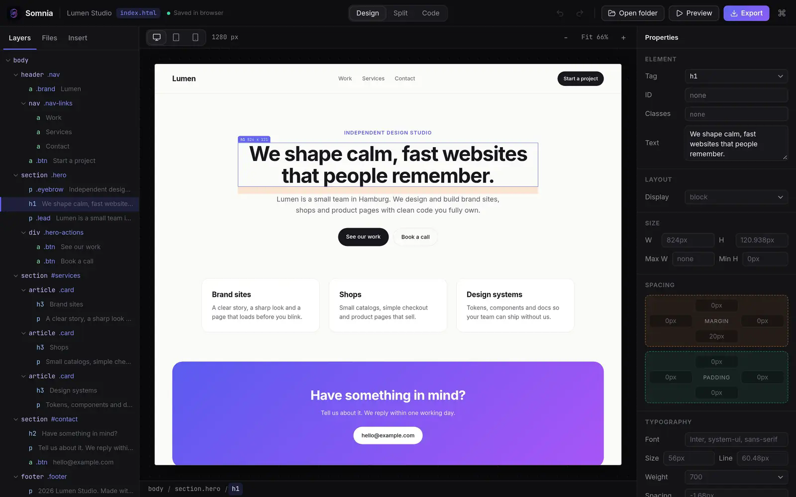
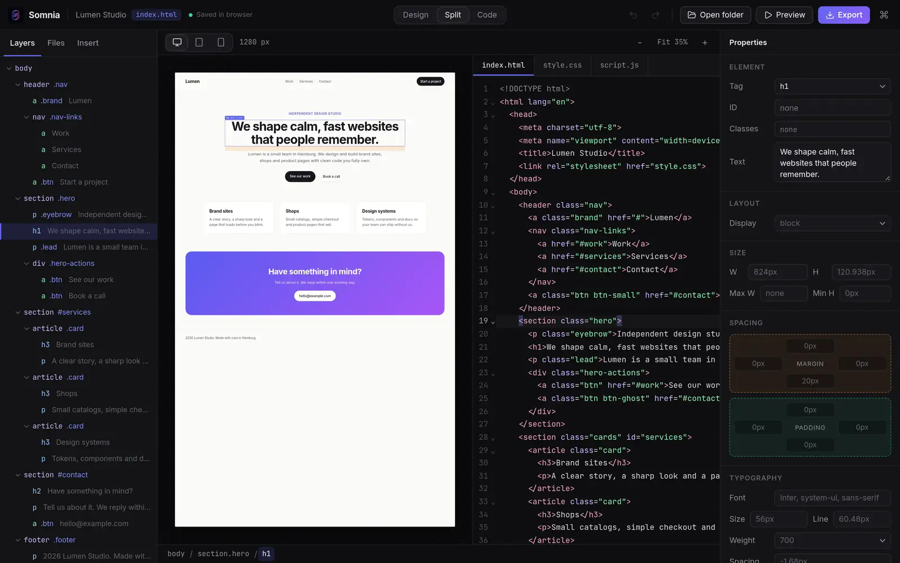
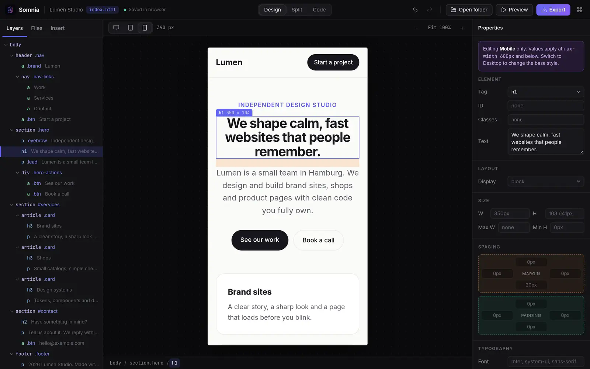
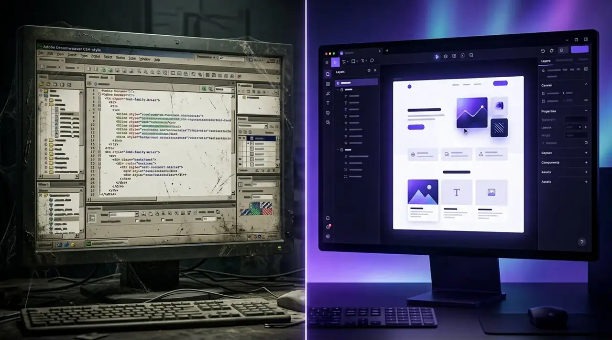

Native and light
A small desktop app on Tauri and Rust instead of a bundled Chromium. Design targets: under 10 MB installer, under 800 ms cold start, under 80 MB idle memory.
Target, not measured yetConcept in development. Phase 0 prototype is live.
Somnia is a web design studio that renders in a real browser, writes clean HTML and CSS you own, and has an AI that sees your canvas. We are building it in the open, one honest step at a time.
Runs in Chrome, Edge, Firefox and Safari. No install, no account. The native desktop app does not exist yet.

Why Somnia
There is a gap for a fast, beautiful visual editor that treats HTML and CSS as the real product. That is the whole idea.
A small desktop app on Tauri and Rust instead of a bundled Chromium. Design targets: under 10 MB installer, under 800 ms cold start, under 80 MB idle memory.
Target, not measured yetThe preview is a real browser rendering your real code. If it looks right in the editor, it looks right when you ship it. No fake design view.
Working in the prototypePlain HTML, CSS and JS on your disk. Export or deploy anywhere. No project format, no lock-in, no ransom for your own work.
Working in the prototypeWhat it does
Split view puts code on one side and the canvas on the other. Type in the code and the canvas updates. Drag, drop and style on the canvas and the file updates. One shared undo history covers both.

Switch to tablet or mobile and every change you make is written as a real media query. The desktop style stays untouched, and undo removes it again.

Oneiroi, the AI layer, will not only read code. It will see hierarchy, spacing and color. Select an element and ask for a change, then review every edit as a diff before it lands. Bring your own key or run local models.
Vanilla HTML first, then Tailwind and Bootstrap with real component libraries, then React and Vue. The output stays idiomatic code you would be happy to commit.
Performance budget
These are targets from our performance budget. We will publish measurements when there is a native build to measure.

You built hundreds of sites there and it worked. Then it stopped evolving. The plan is to open your existing projects, turn templates into modern components, and keep the split view you know, only faster.
Today you can already open a folder of plain HTML files from disk in a Chromium browser and edit it in the prototype.
Honest status
Roadmap
Open a folder, edit in code view, see it on the canvas, save. The browser prototype covers this and more.
Build a simple page visually. Closed alpha.
Bootstrap and Tailwind, a competent code editor. Public beta.
AI layer, accessibility audit, deploy panel, extensions.
Signing, installers, docs, release candidate, v1.0.
Per aspera ad astra
Try what exists. It is rough in places, and it already works.
Open the Phase 0 prototype